Anomalies at the selected clusters
Mean anomaly before heatwave days at the clusters and lags chosen by the CRO.
Cross-site sign and significance matrices
Local fields: consistently selected clusters per site, sign and significance
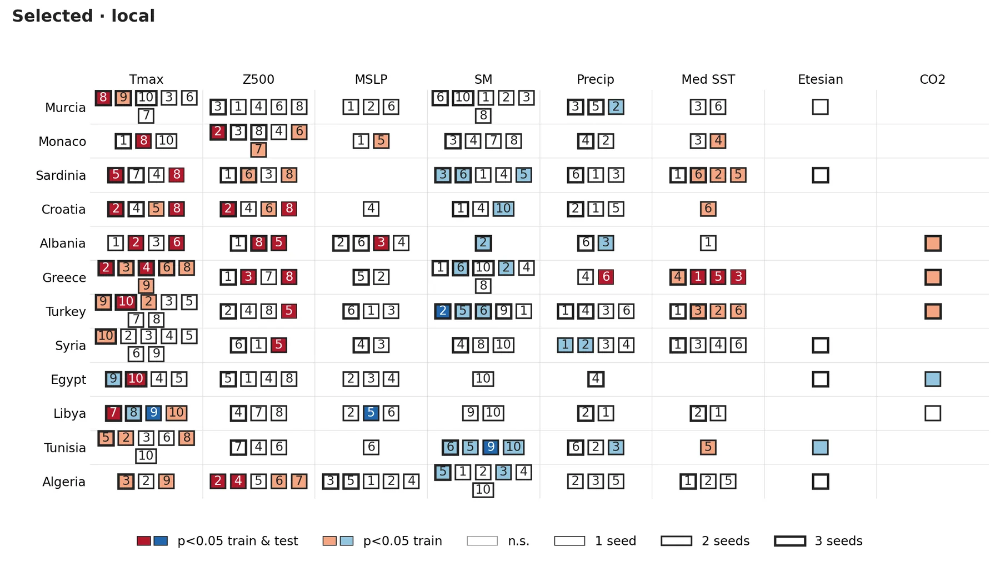
About this figure
One box per consistently selected cluster or series at each site (chosen by at least 2 of 3 seeds, or robust in at least one seed under R, D or W): number = cluster (Etesian and CO2 boxes have none), border thickness = number of seeds. Fill = sign of the training contrast R − all days, which is what the year-permutation test measures (red positive, blue negative): dark = p < 0.05 in train and in test with the same sign, light = p < 0.05 in train only, white = not significant. Of the 252 local site–driver pairs, 92 are significant in training and 33 also pass the test check.
anomalia/figuras/cruzado/C1_matrix_local.png
Remote fields and indices: consistently selected clusters, sign and significance
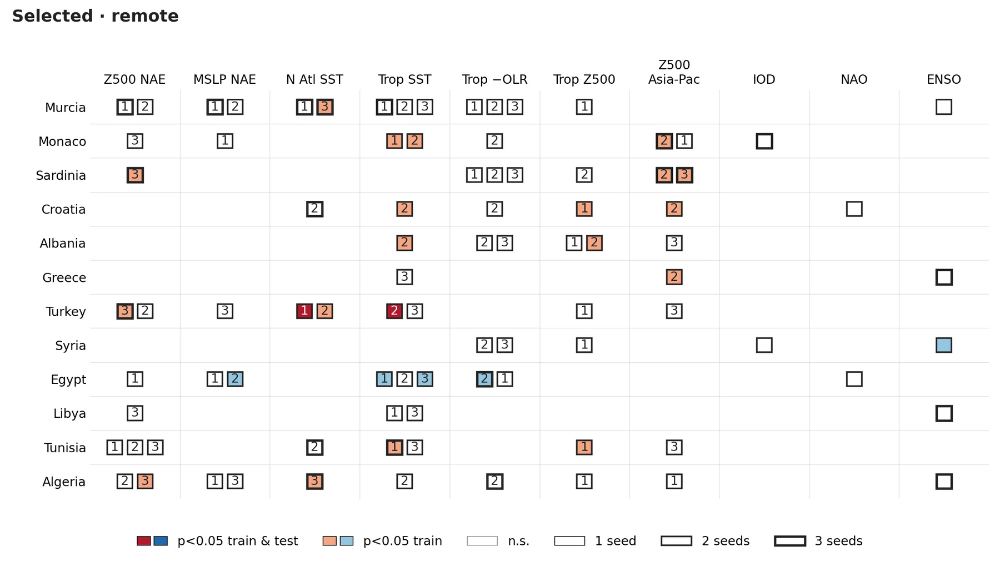
About this figure
Same encoding as the local matrix for the remote clusters (Z500 and MSLP NAE, N Atl SST, Trop SST, Trop −OLR, Trop Z500, Z500 Asia-Pac) and the IOD, NAO and ENSO indices (boxes without number): fill = sign of the training contrast R − all days, dark = p < 0.05 in train and test with the same sign, light = train only, white = not significant, border thickness = seeds. Of the 89 remote site–driver pairs, 26 are significant in training and only 2 (Turkey N Atl SST c1 and Trop SST c2) also pass the test check. In 5 significant cells (Murcia N Atl SST c3, Tunisia Trop SST c1 and Trop Z500 c1, Croatia Trop Z500 c1, Albania Trop Z500 c2) R itself is slightly negative while R − all days is positive, so the box is red although the anomaly map is near zero.
anomalia/figuras/cruzado/C2_matrix_remote.png
Anomaly matrices
Local fields: plain anomaly (R) of the selected clusters at their CRO lags
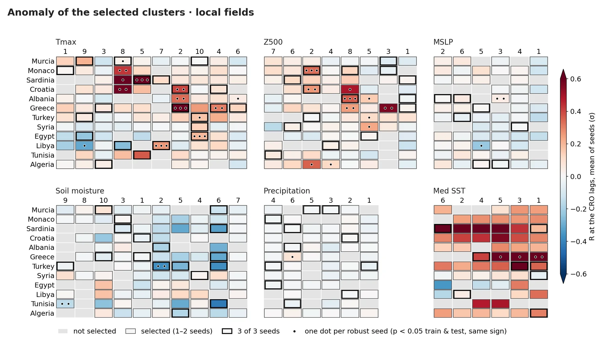
About this figure
Each cell is the plain anomaly R (σ, vs 1980–2010) of a selected cluster on 1950–2010 heatwave days at its CRO lag window, averaged over the seeds that selected it (each at its own window); grey = not selected, thin frame = 1–2 seeds, thick black frame = all 3 seeds, colour scale ±0.6 σ. One dot per seed whose window is robust (p < 0.05 in train and test, same sign). Only 6 pairs are robust in all 3 seeds: Tmax c5 Sardinia, c2 Greece, c7 Libya and c10 Egypt, and Z500 c2 Monaco and c8 Albania.
presentacion/figuras/05a_anomaly_matrix_local.png
Remote fields: plain anomaly (R) of the selected clusters at their CRO lags
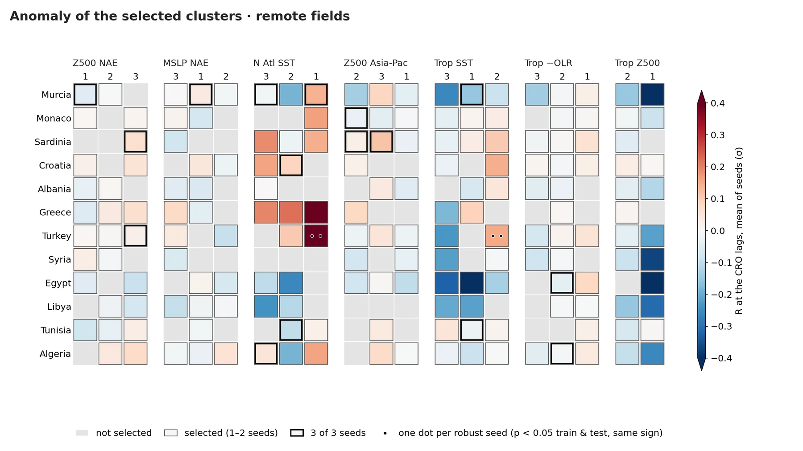
About this figure
Same encoding as the local matrix, for the seven remote fields with a colour scale of ±0.4 σ; the NAO, ENSO and IOD indices are left out because their composites are not in σ units. Only Turkey has robust seeds: North Atlantic SST c1 and tropical SST c2, each robust in both seeds that selected it.
presentacion/figuras/05a_anomaly_matrix_remote.png
Selected vs non-selected clusters
Selected vs non-selected clusters: |R − all days| and rank-1 share by field
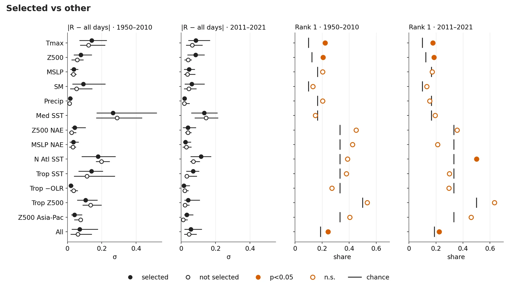
About this figure
Left two panels (1950–2010, 2011–2021): median (dot) and interquartile range (line) of |R − all days| (σ) for each CRO selection (black) and for the clusters of the same field that no seed chose at that site, at the same lags (white). Right two panels: share of selections in which the selected cluster has the largest |R − all days| of its field (rank 1) against chance (black tick, mean of 1/k); filled orange = p < 0.05, open orange = not significant (cluster-label permutation). Over all 1027 selections of mapped fields the rank-1 share is 24.4% in training and 22.5% in test vs 18.9% by chance, and among single fields it is significant in both periods only for local Tmax and Z500.
anomalia/figuras/cruzado/C3_selection_check.png
Atlases by field
Tmax: pre-heatwave anomaly maps per site (train 1950–2010)

About this figure
Each panel maps the plain anomaly R (σ, vs 1980–2010) on 1950–2010 heatwave days, averaged over the representative lag window (panel title) of the site's most-selected Tmax cluster. Thick black outline with boxed number = that cluster, thin grey outline = other clusters selected by ≥ 2 of 3 seeds at the site, small dots = p < 0.05 in the year-permutation test (shown on every second node), star = site; scale ±0.6 σ. Sardinia c5, Greece c2, Libya c7 and Egypt c10 are robust in all 3 seeds; the warm patch moves with the site, largely because heatwaves are defined from the site's own Tmax.
presentacion/figuras/05c_atlas_L_t2m_max.png
Z500: pre-heatwave anomaly maps per site (train 1950–2010)

About this figure
Each panel maps the plain anomaly R (σ, vs 1980–2010) on 1950–2010 heatwave days, averaged over the representative lag window (panel title) of the site's most-selected Z500 cluster. Thick black outline with boxed number = that cluster, thin grey outline = other clusters selected by ≥ 2 of 3 seeds at the site, small dots = p < 0.05 (every second node), star = site; scale ±0.6 σ. Monaco c2 (3–17 d) and Albania c8 (3–16 d), a ridge over the site, are robust in all 3 seeds, and Croatia c2 (3–9 d) in 2 of 3.
presentacion/figuras/05c_atlas_L_z500.png
MSLP: pre-heatwave anomaly maps per site (train 1950–2010)
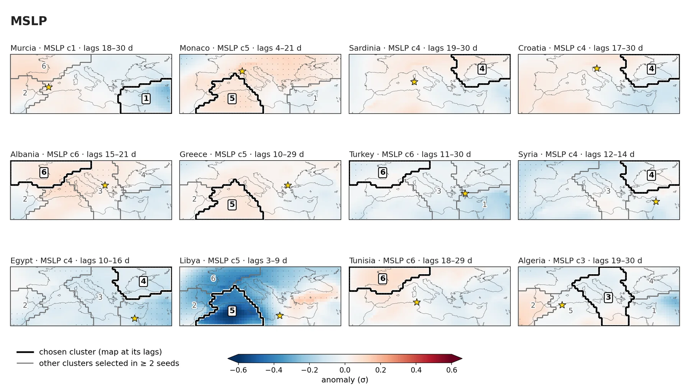
About this figure
Each panel maps the plain anomaly R (σ, vs 1980–2010) on 1950–2010 heatwave days, averaged over the representative lag window (panel title) of the site's most-selected MSLP cluster. Thick black outline with boxed number = that cluster, thin grey outline = other clusters selected by ≥ 2 of 3 seeds at the site, small dots = p < 0.05 (every second node), star = site; scale ±0.6 σ. Only the Libya panel (c5, 3–9 d, low pressure) is robust, in 1 of the 2 seeds that selected it; no MSLP cluster selected by all 3 seeds is robust.
presentacion/figuras/05c_atlas_L_msl.png
Soil moisture: pre-heatwave anomaly maps per site (train 1950–2010)
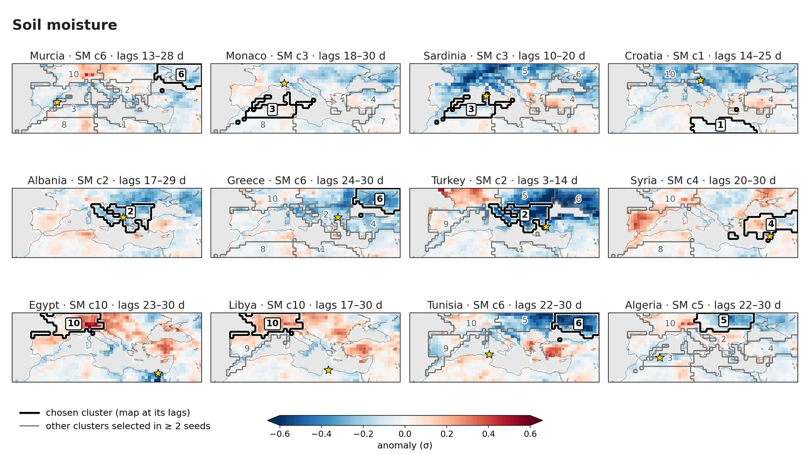
About this figure
Each panel maps the plain anomaly R (σ, vs 1980–2010) on 1950–2010 heatwave days, averaged over the representative lag window (panel title) of the site's most-selected soil-moisture cluster. Thick black outline with boxed number = that cluster (small black rings are its isolated single nodes), thin grey outline = other clusters selected by ≥ 2 of 3 seeds, small dots = p < 0.05 (every second node), star = site, grey = sea; scale ±0.6 σ. Of the 17 soil-moisture clusters selected by all 3 seeds, 14 have negative R (drier soil), but only Turkey c2 (3–14 d) is robust (2 of 3 seeds).
presentacion/figuras/05c_atlas_L_sm1.png
Precipitation: pre-heatwave anomaly maps per site (train 1950–2010)
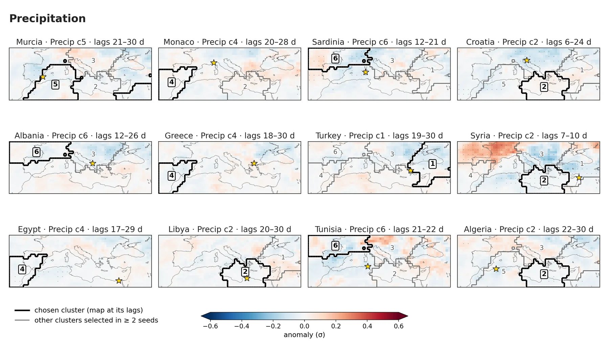
About this figure
Each panel maps the plain anomaly R (σ, vs 1980–2010) on 1950–2010 heatwave days, averaged over the representative lag window (panel title) of the site's most-selected precipitation cluster. Thick black outline with boxed number = that cluster, thin grey outline = other clusters selected by ≥ 2 of 3 seeds, small dots = p < 0.05 (every second node), star = site; scale ±0.6 σ. None of the clusters shown is robust in any seed.
presentacion/figuras/05c_atlas_L_tp.png
Med SST: pre-heatwave anomaly maps per site (train 1950–2010)

About this figure
Each panel maps the plain anomaly R (σ, vs 1980–2010) on 1950–2010 heatwave days, averaged over the representative lag window (panel title) of the site's most-selected Mediterranean SST cluster. Thick black outline with boxed number = that cluster, thin grey outline = other clusters selected by ≥ 2 of 3 seeds, small dots = p < 0.05 (every second node), star = site, grey = land; scale ±0.6 σ. In most panels the anomaly is positive over most of the basin, selected or not (median +0.33 σ for the 8 clusters selected by all 3 seeds), mainly reflecting the warming trend contained in R; none of the clusters shown is robust.
presentacion/figuras/05c_atlas_L_sstMed.png
Z500 N Atlantic–Europe: pre-heatwave anomaly maps per site (train 1950–2010)
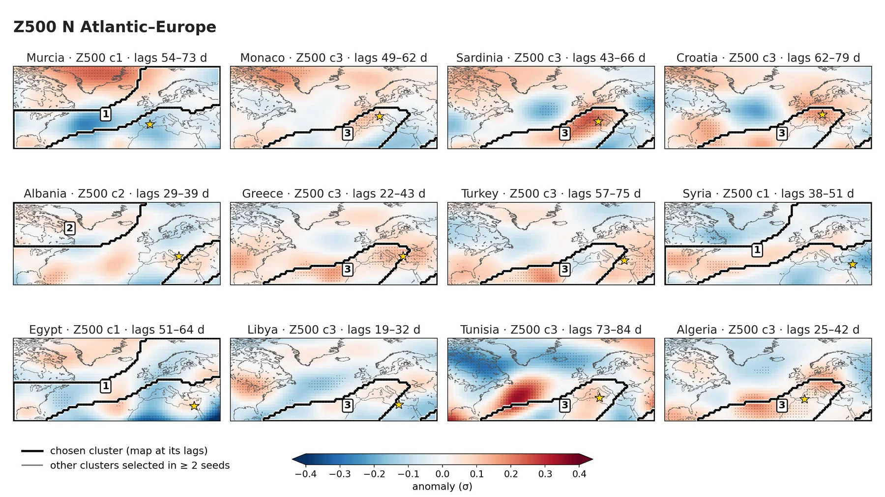
About this figure
Each panel maps the plain anomaly R (σ, vs 1980–2010) on 1950–2010 heatwave days, averaged over the representative lag window (panel title) of the site's most-selected cluster of this remote field. Thick black outline with boxed number = that cluster (other selected clusters are not outlined for remote fields), small dots = p < 0.05, star = site; scale ±0.4 σ. None of the clusters shown is robust in any seed.
presentacion/figuras/05c_atlas_R_z500.png
MSLP N Atlantic–Europe: pre-heatwave anomaly maps per site (train 1950–2010)
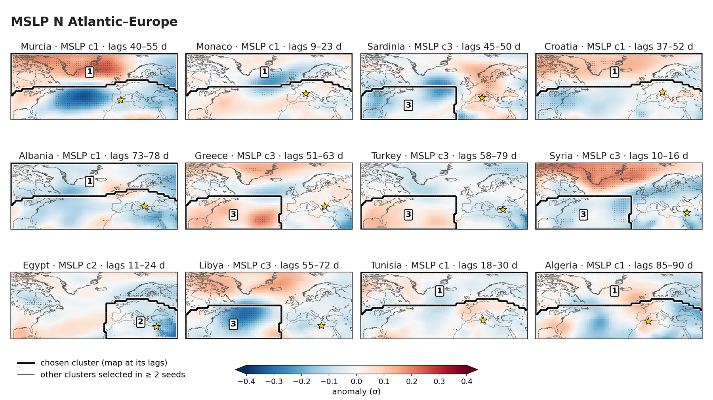
About this figure
Each panel maps the plain anomaly R (σ, vs 1980–2010) on 1950–2010 heatwave days, averaged over the representative lag window (panel title) of the site's most-selected cluster of this remote field. Thick black outline with boxed number = that cluster (other selected clusters are not outlined for remote fields), small dots = p < 0.05, star = site; scale ±0.4 σ. None of the clusters shown is robust in any seed.
presentacion/figuras/05c_atlas_R_msl.png
N Atlantic SST: pre-heatwave anomaly maps per site (train 1950–2010)

About this figure
Each panel maps the plain anomaly R (σ, vs 1980–2010) on 1950–2010 heatwave days, averaged over the representative lag window (panel title) of the site's most-selected North Atlantic SST cluster. Thick black outline with boxed number = that cluster (other selected clusters are not outlined), small dots = p < 0.05, grey = land and excluded nodes, star = Murcia at the domain edge; scale ±0.4 σ. Syria selected no cluster of this field; Turkey c1 (40–47 d) is robust in both seeds that selected it, and no other panel is robust.
presentacion/figuras/05c_atlas_A_sst.png
Z500 Asia–N Pacific: pre-heatwave anomaly maps per site (train 1950–2010)
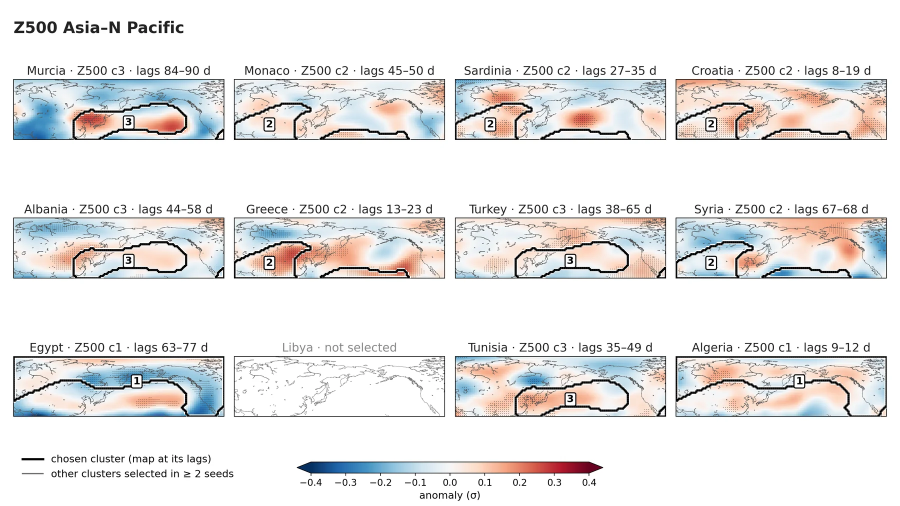
About this figure
Each panel maps the plain anomaly R (σ, vs 1980–2010) on 1950–2010 heatwave days, averaged over the representative lag window (panel title) of the site's most-selected Z500 Asia–North Pacific cluster. Thick black outline with boxed number = that cluster (other selected clusters are not outlined), small dots = p < 0.05; the sites lie outside this domain; scale ±0.4 σ. Libya selected no cluster of this field, and none of the clusters shown is robust.
presentacion/figuras/05c_atlas_H_z500.png
Tropical SST: pre-heatwave anomaly maps per site (train 1950–2010)

About this figure
Each panel maps the plain anomaly R (σ, vs 1980–2010) on 1950–2010 heatwave days, averaged over the representative lag window (panel title) of the site's most-selected tropical SST cluster. Thick black outline with boxed number = that cluster (other selected clusters are not outlined), small dots = p < 0.05, grey = land; scale ±0.4 σ. Turkey c2 (66–69 d) is robust in both seeds that selected it; no other panel is robust.
presentacion/figuras/05c_atlas_T_sst.png
Tropical −OLR: pre-heatwave anomaly maps per site (train 1950–2010)
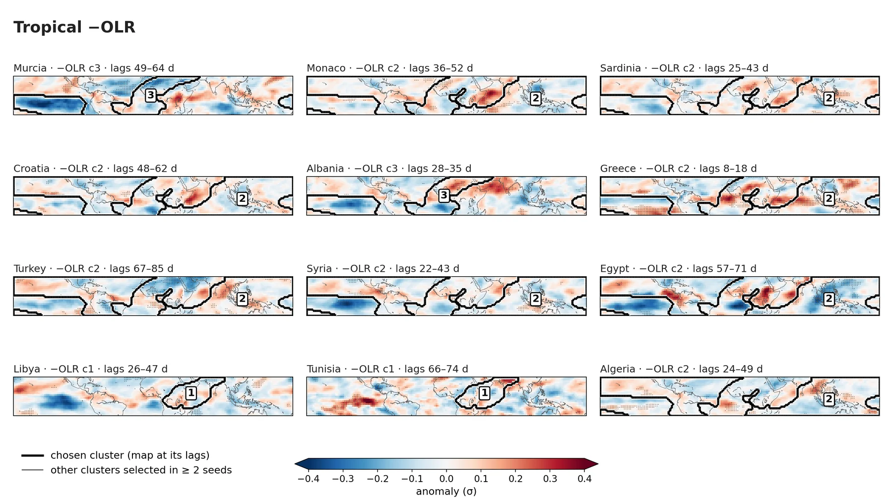
About this figure
Each panel maps the plain anomaly R (σ, vs 1980–2010) on 1950–2010 heatwave days, averaged over the representative lag window (panel title) of the site's most-selected tropical −OLR cluster. Thick black outline with boxed number = that cluster (other selected clusters are not outlined), small dots = p < 0.05; scale ±0.4 σ. The field is the ERA5 net top-of-atmosphere longwave flux (= −OLR), so positive values mean more deep convection; none of the clusters shown is robust.
presentacion/figuras/05c_atlas_T_olr.png
Tropical Z500: pre-heatwave anomaly maps per site (train 1950–2010)
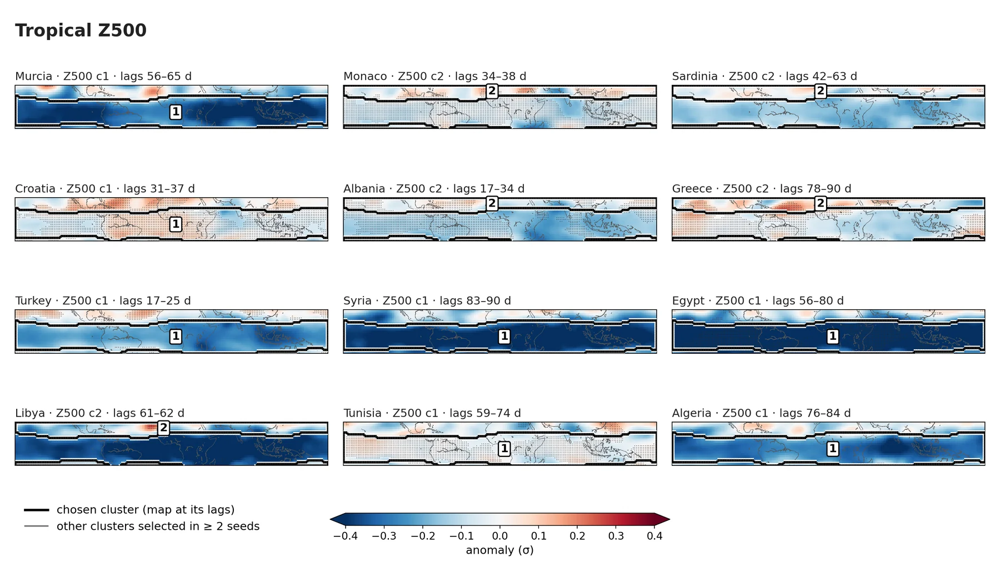
About this figure
Each panel maps the plain anomaly R (σ, vs 1980–2010) on 1950–2010 heatwave days, averaged over the representative lag window (panel title) of the site's most-selected tropical Z500 cluster. Thick black outline with boxed number = that cluster (other selected clusters are not outlined), small dots = p < 0.05; scale ±0.4 σ. None of the clusters shown is robust in any seed.
presentacion/figuras/05c_atlas_T_z500.png
Per-site anomaly maps, train 1950–2010
Murcia: anomaly maps at the CRO-selected clusters (train 1950–2010)
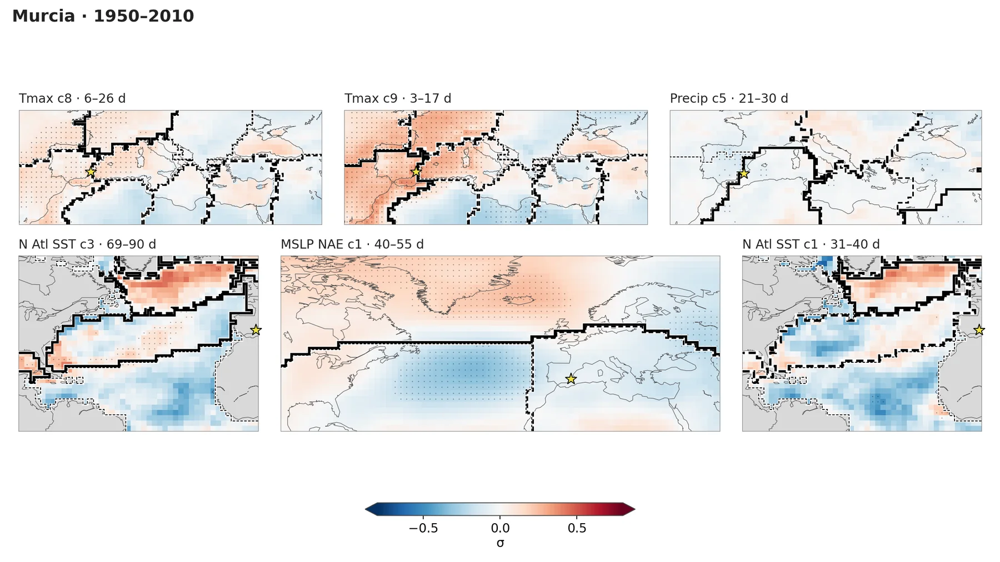
About this figure
Training R (σ, vs the 1980–2010 climatology; scale ±0.8σ) at the six highest-priority consistently selected clusters of Murcia, each map averaged over that cluster's representative lag window (given in the panel label). Solid black outline = the panel's cluster; dashed = other clusters of the same field chosen by any seed at Murcia (thicker = more seeds), shown at the panel's lags; thin grey lines = other cluster boundaries; grey fill = no data; star = site; dots = nodes where heatwave days differ from all days (year permutation, p < 0.05), not where R differs from zero. Panels that also pass the test check (p < 0.05 in train and test, same sign of R − all days): Tmax c8 (1 of 6); the other 32 consistent clusters are not mapped and appear only in the cross-site matrices and tables.
anomalia/figuras/sitios/Murcia.png
Monaco: anomaly maps at the CRO-selected clusters (train 1950–2010)
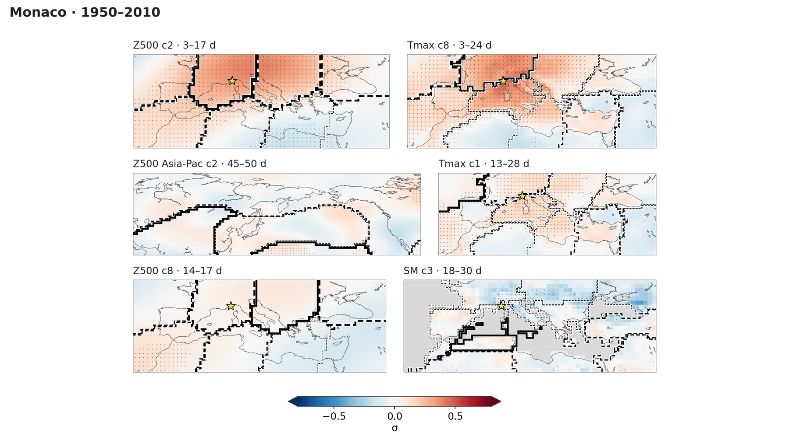
About this figure
Training R (σ, vs the 1980–2010 climatology; scale ±0.8σ) at the six highest-priority consistently selected clusters of Monaco, each map averaged over that cluster's representative lag window (given in the panel label). Solid black outline = the panel's cluster; dashed = other clusters of the same field chosen by any seed at Monaco (thicker = more seeds), shown at the panel's lags; thin grey lines = other cluster boundaries; grey fill = no data; star = site; dots = nodes where heatwave days differ from all days (year permutation, p < 0.05), not where R differs from zero. Panels that also pass the test check (p < 0.05 in train and test, same sign of R − all days): Z500 c2 and Tmax c8 (2 of 6); the other 20 consistent clusters are not mapped and appear only in the cross-site matrices and tables.
anomalia/figuras/sitios/Monaco.png
Sardinia: anomaly maps at the CRO-selected clusters (train 1950–2010)
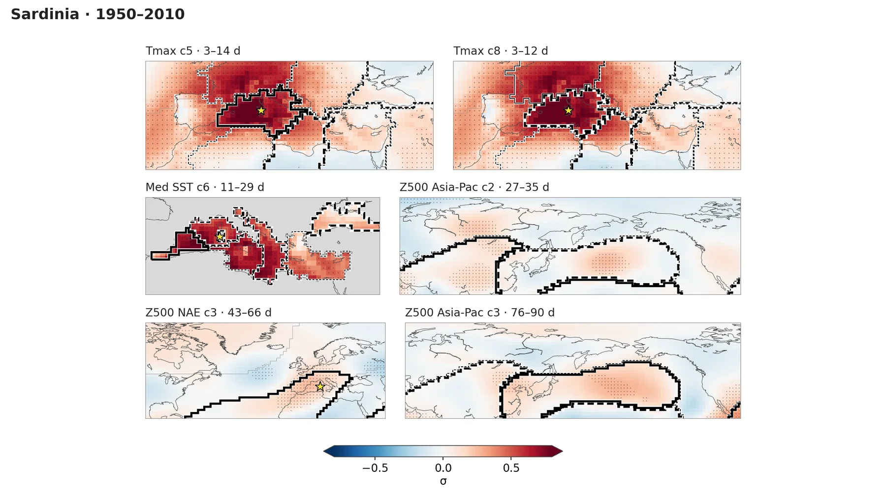
About this figure
Training R (σ, vs the 1980–2010 climatology; scale ±0.8σ) at the six highest-priority consistently selected clusters of Sardinia, each map averaged over that cluster's representative lag window (given in the panel label). Solid black outline = the panel's cluster; dashed = other clusters of the same field chosen by any seed at Sardinia (thicker = more seeds), shown at the panel's lags; thin grey lines = other cluster boundaries; grey fill = no data; star = site; dots = nodes where heatwave days differ from all days (year permutation, p < 0.05), not where R differs from zero. Panels that also pass the test check (p < 0.05 in train and test, same sign of R − all days): Tmax c5 and Tmax c8 (2 of 6); the other 21 consistent clusters are not mapped and appear only in the cross-site matrices and tables.
anomalia/figuras/sitios/Cerdenia.png
Croatia: anomaly maps at the CRO-selected clusters (train 1950–2010)
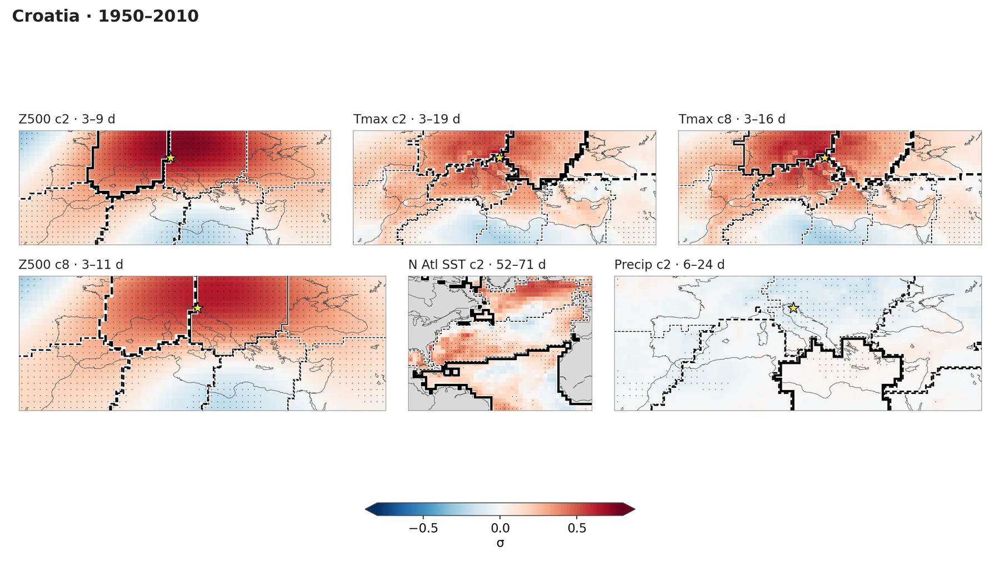
About this figure
Training R (σ, vs the 1980–2010 climatology; scale ±0.8σ) at the six highest-priority consistently selected clusters of Croatia, each map averaged over that cluster's representative lag window (given in the panel label). Solid black outline = the panel's cluster; dashed = other clusters of the same field chosen by any seed at Croatia (thicker = more seeds), shown at the panel's lags; thin grey lines = other cluster boundaries; grey fill = no data; star = site; dots = nodes where heatwave days differ from all days (year permutation, p < 0.05), not where R differs from zero. Panels that also pass the test check (p < 0.05 in train and test, same sign of R − all days): Z500 c2, Tmax c2, Tmax c8 and Z500 c8 (4 of 6); the other 15 consistent clusters are not mapped and appear only in the cross-site matrices and tables.
anomalia/figuras/sitios/Croacia.png
Albania: anomaly maps at the CRO-selected clusters (train 1950–2010)
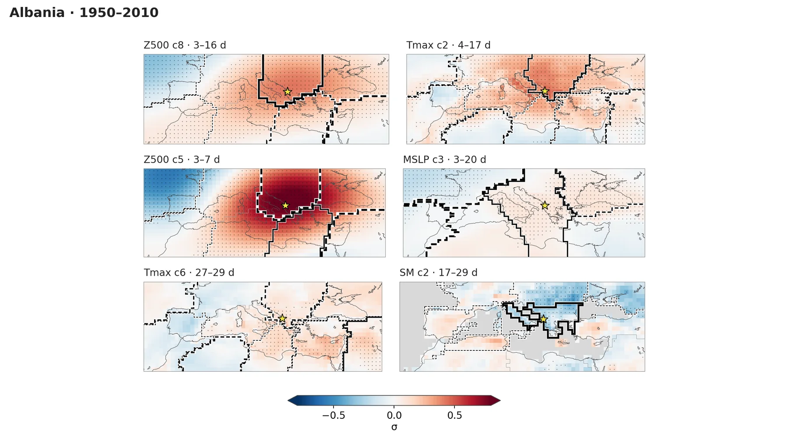
About this figure
Training R (σ, vs the 1980–2010 climatology; scale ±0.8σ) at the six highest-priority consistently selected clusters of Albania, each map averaged over that cluster's representative lag window (given in the panel label). Solid black outline = the panel's cluster; dashed = other clusters of the same field chosen by any seed at Albania (thicker = more seeds), shown at the panel's lags; thin grey lines = other cluster boundaries; grey fill = no data; star = site; dots = nodes where heatwave days differ from all days (year permutation, p < 0.05), not where R differs from zero. Panels that also pass the test check (p < 0.05 in train and test, same sign of R − all days): Z500 c8, Tmax c2, Z500 c5, MSLP c3 and Tmax c6 (5 of 6); the other 15 consistent clusters are not mapped and appear only in the cross-site matrices and tables.
anomalia/figuras/sitios/Albania.png
Greece: anomaly maps at the CRO-selected clusters (train 1950–2010)
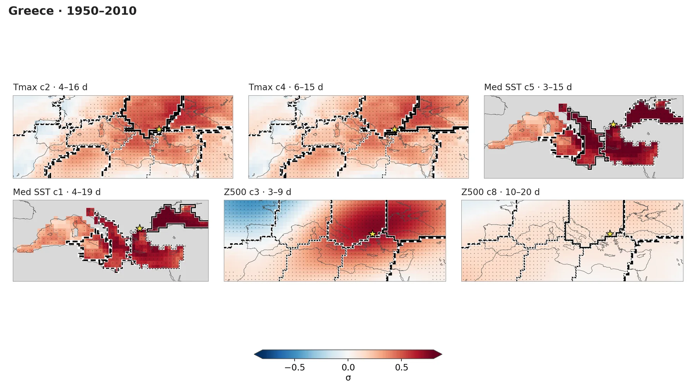
About this figure
Training R (σ, vs the 1980–2010 climatology; scale ±0.8σ) at the six highest-priority consistently selected clusters of Greece, each map averaged over that cluster's representative lag window (given in the panel label). Solid black outline = the panel's cluster; dashed = other clusters of the same field chosen by any seed at Greece (thicker = more seeds), shown at the panel's lags; thin grey lines = other cluster boundaries; grey fill = no data; star = site; dots = nodes where heatwave days differ from all days (year permutation, p < 0.05), not where R differs from zero. Panels that also pass the test check (p < 0.05 in train and test, same sign of R − all days): all six panels; the other 20 consistent clusters are not mapped and appear only in the cross-site matrices and tables; in training Med SST c5 has 30% of its area beyond ±0.8σ.
anomalia/figuras/sitios/Grecia.png
Turkey: anomaly maps at the CRO-selected clusters (train 1950–2010)
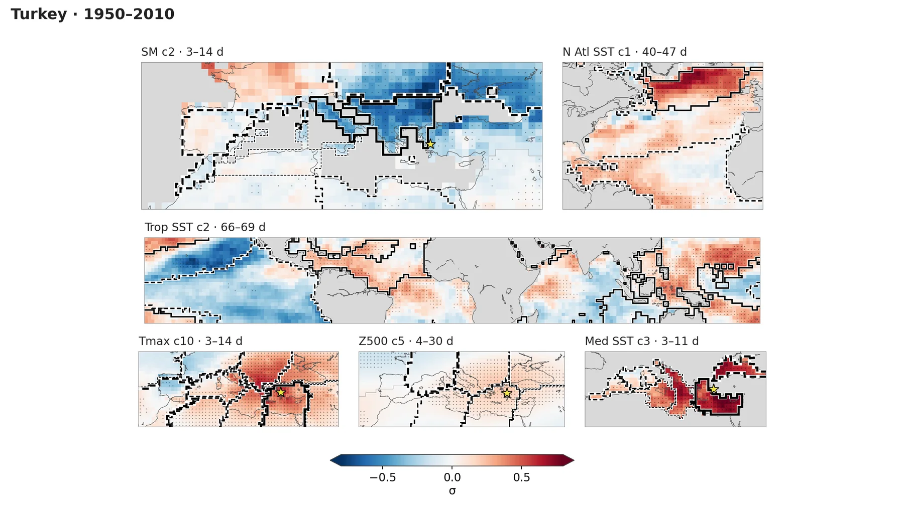
About this figure
Training R (σ, vs the 1980–2010 climatology; scale ±0.8σ) at the six highest-priority consistently selected clusters of Turkey, each map averaged over that cluster's representative lag window (given in the panel label). Solid black outline = the panel's cluster; dashed = other clusters of the same field chosen by any seed at Turkey (thicker = more seeds), shown at the panel's lags; thin grey lines = other cluster boundaries; grey fill = no data; star = site; dots = nodes where heatwave days differ from all days (year permutation, p < 0.05), not where R differs from zero. Panels that also pass the test check (p < 0.05 in train and test, same sign of R − all days): SM c2, Tmax c10, N Atl SST c1, Trop SST c2 and Z500 c5 (5 of 6); the other 30 consistent clusters are not mapped and appear only in the cross-site matrices and tables.
anomalia/figuras/sitios/Turquia.png
Syria: anomaly maps at the CRO-selected clusters (train 1950–2010)
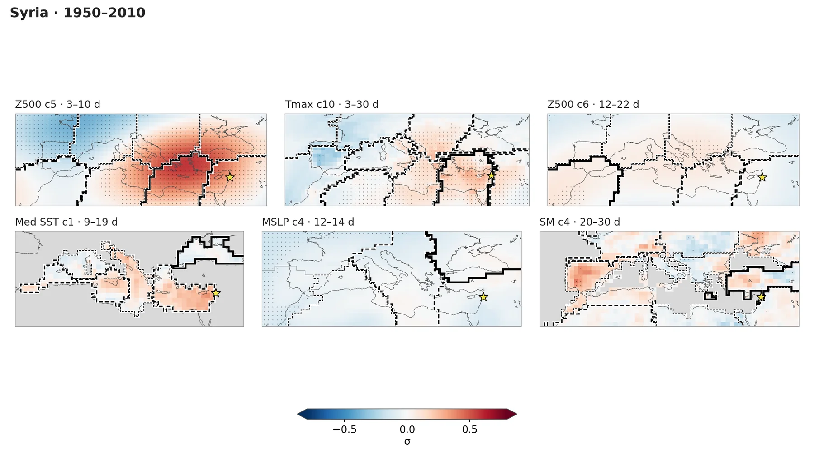
About this figure
Training R (σ, vs the 1980–2010 climatology; scale ±0.8σ) at the six highest-priority consistently selected clusters of Syria, each map averaged over that cluster's representative lag window (given in the panel label). Solid black outline = the panel's cluster; dashed = other clusters of the same field chosen by any seed at Syria (thicker = more seeds), shown at the panel's lags; thin grey lines = other cluster boundaries; grey fill = no data; star = site; dots = nodes where heatwave days differ from all days (year permutation, p < 0.05), not where R differs from zero. Panels that also pass the test check (p < 0.05 in train and test, same sign of R − all days): Z500 c5 (1 of 6); the other 20 consistent clusters are not mapped and appear only in the cross-site matrices and tables.
anomalia/figuras/sitios/Siria.png
Egypt: anomaly maps at the CRO-selected clusters (train 1950–2010)
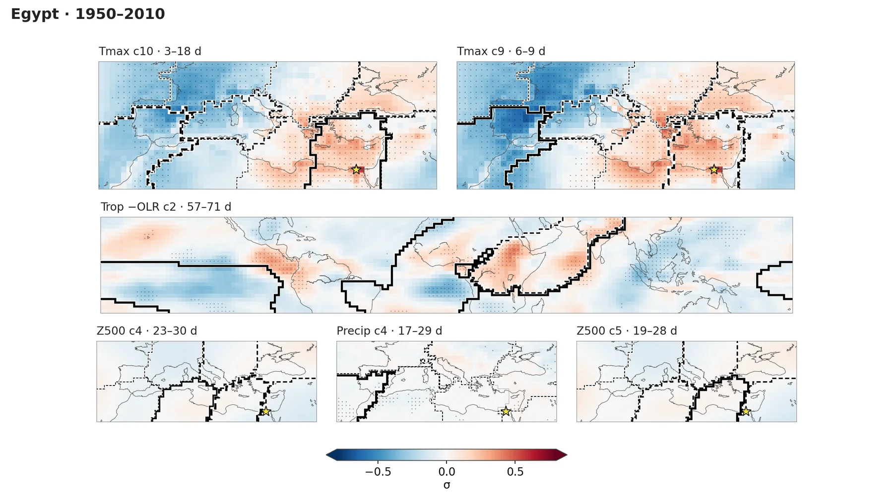
About this figure
Training R (σ, vs the 1980–2010 climatology; scale ±0.8σ) at the six highest-priority consistently selected clusters of Egypt, each map averaged over that cluster's representative lag window (given in the panel label). Solid black outline = the panel's cluster; dashed = other clusters of the same field chosen by any seed at Egypt (thicker = more seeds), shown at the panel's lags; thin grey lines = other cluster boundaries; grey fill = no data; star = site; dots = nodes where heatwave days differ from all days (year permutation, p < 0.05), not where R differs from zero. Panels that also pass the test check (p < 0.05 in train and test, same sign of R − all days): Tmax c10 (1 of 6); the other 15 consistent clusters are not mapped and appear only in the cross-site matrices and tables.
anomalia/figuras/sitios/Egipto.png
Libya: anomaly maps at the CRO-selected clusters (train 1950–2010)
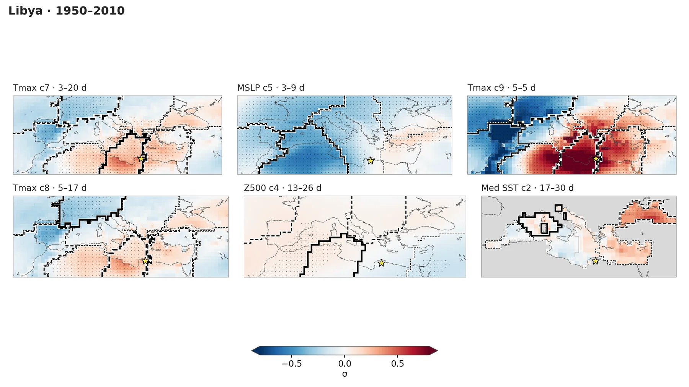
About this figure
Training R (σ, vs the 1980–2010 climatology; scale ±0.8σ) at the six highest-priority consistently selected clusters of Libya, each map averaged over that cluster's representative lag window (given in the panel label). Solid black outline = the panel's cluster; dashed = other clusters of the same field chosen by any seed at Libya (thicker = more seeds), shown at the panel's lags; thin grey lines = other cluster boundaries; grey fill = no data; star = site; dots = nodes where heatwave days differ from all days (year permutation, p < 0.05), not where R differs from zero. Panels that also pass the test check (p < 0.05 in train and test, same sign of R − all days): Tmax c7, MSLP c5 and Tmax c9 (3 of 6); the other 13 consistent clusters are not mapped and appear only in the cross-site matrices and tables.
anomalia/figuras/sitios/Libia.png
Tunisia: anomaly maps at the CRO-selected clusters (train 1950–2010)
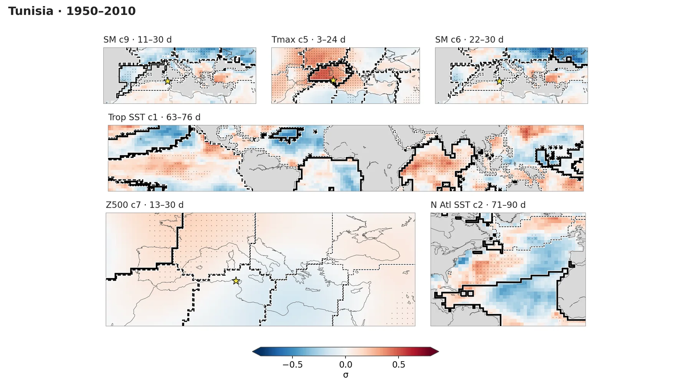
About this figure
Training R (σ, vs the 1980–2010 climatology; scale ±0.8σ) at the six highest-priority consistently selected clusters of Tunisia, each map averaged over that cluster's representative lag window (given in the panel label). Solid black outline = the panel's cluster; dashed = other clusters of the same field chosen by any seed at Tunisia (thicker = more seeds), shown at the panel's lags; thin grey lines = other cluster boundaries; grey fill = no data; star = site; dots = nodes where heatwave days differ from all days (year permutation, p < 0.05), not where R differs from zero. Panels that also pass the test check (p < 0.05 in train and test, same sign of R − all days): SM c9 (1 of 6); the other 20 consistent clusters are not mapped and appear only in the cross-site matrices and tables.
anomalia/figuras/sitios/Tunez.png
Algeria: anomaly maps at the CRO-selected clusters (train 1950–2010)
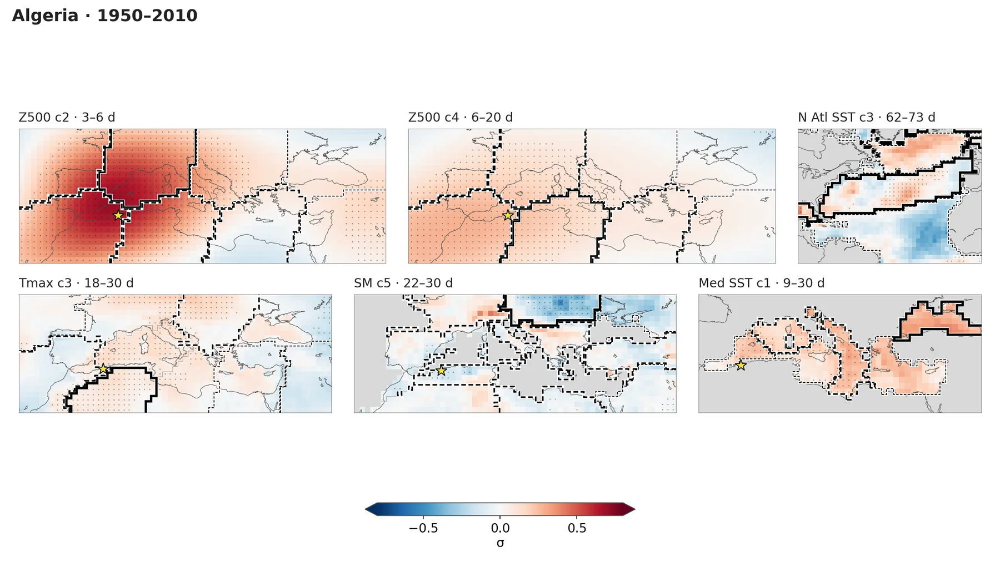
About this figure
Training R (σ, vs the 1980–2010 climatology; scale ±0.8σ) at the six highest-priority consistently selected clusters of Algeria, each map averaged over that cluster's representative lag window (given in the panel label). Solid black outline = the panel's cluster; dashed = other clusters of the same field chosen by any seed at Algeria (thicker = more seeds), shown at the panel's lags; thin grey lines = other cluster boundaries; grey fill = no data; star = site; dots = nodes where heatwave days differ from all days (year permutation, p < 0.05), not where R differs from zero. Panels that also pass the test check (p < 0.05 in train and test, same sign of R − all days): Z500 c2 and Z500 c4 (2 of 6); the other 28 consistent clusters are not mapped and appear only in the cross-site matrices and tables.
anomalia/figuras/sitios/Argelia.png
Per-site anomaly maps, test 2011–2021
Murcia: anomaly maps at the CRO-selected clusters (test 2011–2021)
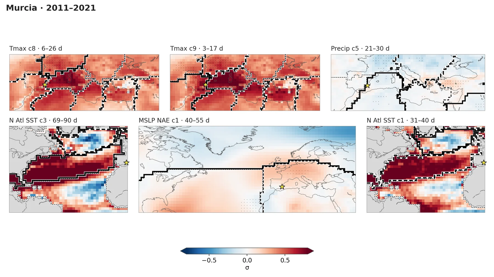
About this figure
Same panels, outlines and ±0.8σ scale as the Murcia training maps, with R computed over the test summers 2011–2021 (never used by the CRO); dots come from a permutation of the test years. R is the raw anomaly vs 1980–2010, so it also contains the warmer test period (which is why the test check uses R − all days) and SST and Tmax panels can saturate. Panels with at least 20% of their area beyond ±0.8σ: N Atl SST c3 (29%) and N Atl SST c1 (22%).
anomalia/figuras/sitios/Murcia_test.png
Monaco: anomaly maps at the CRO-selected clusters (test 2011–2021)
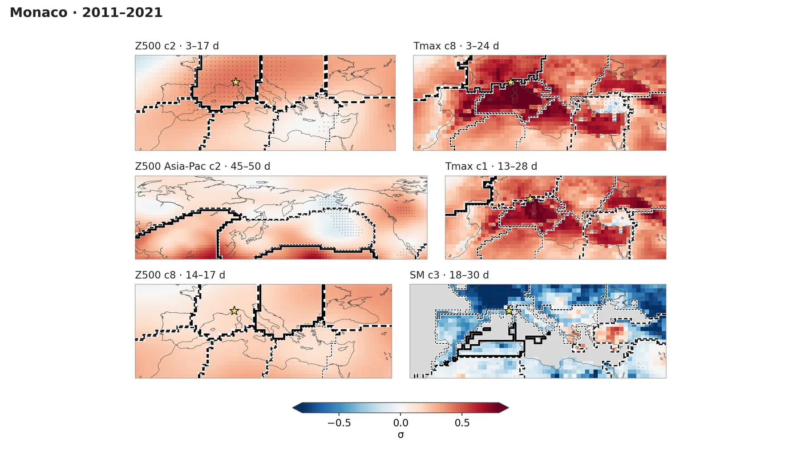
About this figure
Same panels, outlines and ±0.8σ scale as the Monaco training maps, with R computed over the test summers 2011–2021 (never used by the CRO); dots come from a permutation of the test years. R is the raw anomaly vs 1980–2010, so it also contains the warmer test period (which is why the test check uses R − all days) and SST and Tmax panels can saturate. No panel has 20% or more of its area beyond ±0.8σ.
anomalia/figuras/sitios/Monaco_test.png
Sardinia: anomaly maps at the CRO-selected clusters (test 2011–2021)
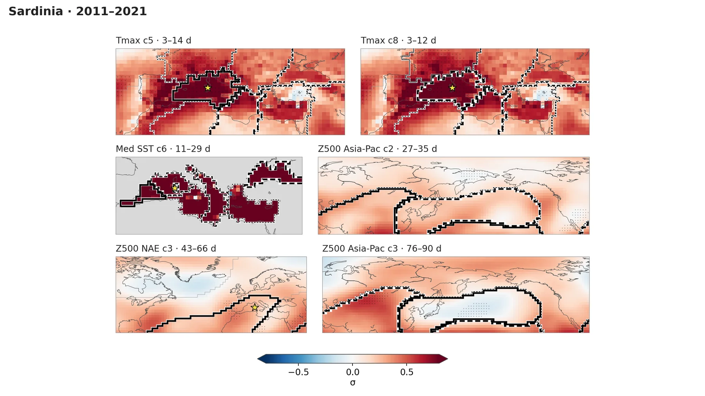
About this figure
Same panels, outlines and ±0.8σ scale as the Sardinia training maps, with R computed over the test summers 2011–2021 (never used by the CRO); dots come from a permutation of the test years. R is the raw anomaly vs 1980–2010, so it also contains the warmer test period (which is why the test check uses R − all days) and SST and Tmax panels can saturate. Panels with at least 20% of their area beyond ±0.8σ: Med SST c6 (91%).
anomalia/figuras/sitios/Cerdenia_test.png
Croatia: anomaly maps at the CRO-selected clusters (test 2011–2021)
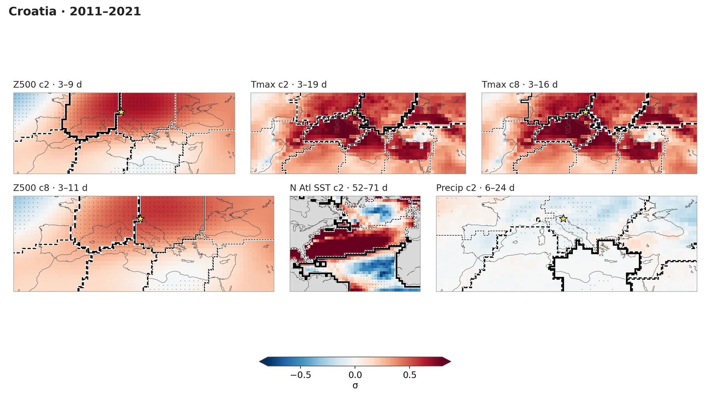
About this figure
Same panels, outlines and ±0.8σ scale as the Croatia training maps, with R computed over the test summers 2011–2021 (never used by the CRO); dots come from a permutation of the test years. R is the raw anomaly vs 1980–2010, so it also contains the warmer test period (which is why the test check uses R − all days) and SST and Tmax panels can saturate. Panels with at least 20% of their area beyond ±0.8σ: N Atl SST c2 (24%).
anomalia/figuras/sitios/Croacia_test.png
Albania: anomaly maps at the CRO-selected clusters (test 2011–2021)
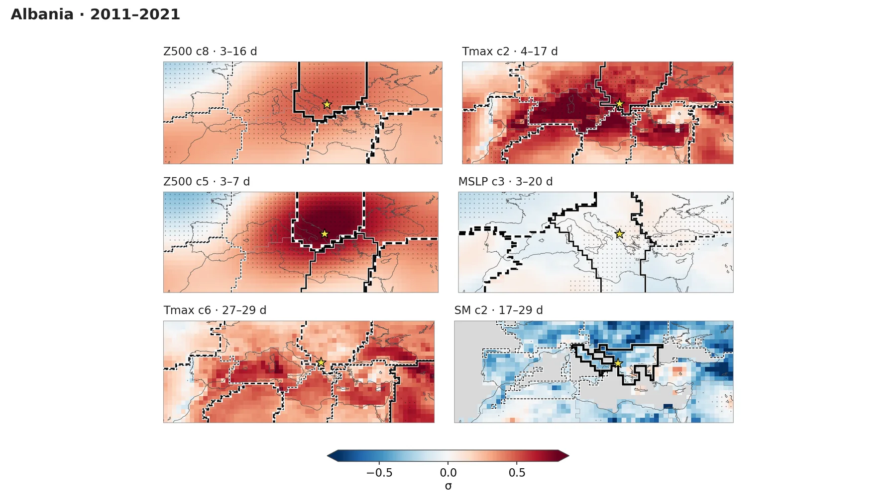
About this figure
Same panels, outlines and ±0.8σ scale as the Albania training maps, with R computed over the test summers 2011–2021 (never used by the CRO); dots come from a permutation of the test years. R is the raw anomaly vs 1980–2010, so it also contains the warmer test period (which is why the test check uses R − all days) and SST and Tmax panels can saturate. No panel has 20% or more of its area beyond ±0.8σ.
anomalia/figuras/sitios/Albania_test.png
Greece: anomaly maps at the CRO-selected clusters (test 2011–2021)
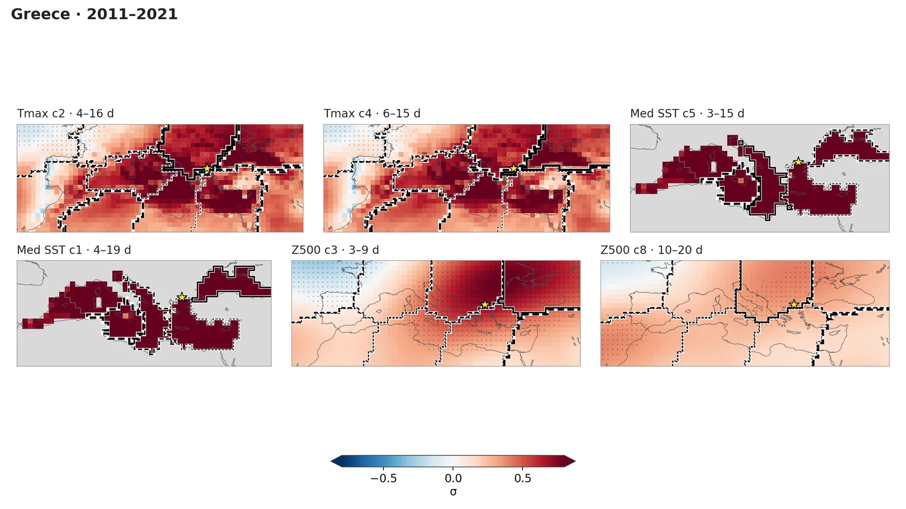
About this figure
Same panels, outlines and ±0.8σ scale as the Greece training maps, with R computed over the test summers 2011–2021 (never used by the CRO); dots come from a permutation of the test years. R is the raw anomaly vs 1980–2010, so it also contains the warmer test period (which is why the test check uses R − all days) and SST and Tmax panels can saturate. Panels with at least 20% of their area beyond ±0.8σ: Med SST c5 (96%) and Med SST c1 (95%).
anomalia/figuras/sitios/Grecia_test.png
Turkey: anomaly maps at the CRO-selected clusters (test 2011–2021)
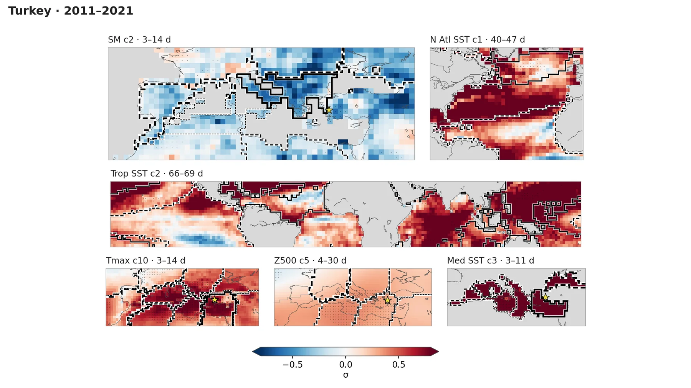
About this figure
Same panels, outlines and ±0.8σ scale as the Turkey training maps, with R computed over the test summers 2011–2021 (never used by the CRO); dots come from a permutation of the test years. R is the raw anomaly vs 1980–2010, so it also contains the warmer test period (which is why the test check uses R − all days) and SST and Tmax panels can saturate. Panels with at least 20% of their area beyond ±0.8σ: Med SST c3 (97%), N Atl SST c1 (32%) and Trop SST c2 (27%).
anomalia/figuras/sitios/Turquia_test.png
Syria: anomaly maps at the CRO-selected clusters (test 2011–2021)
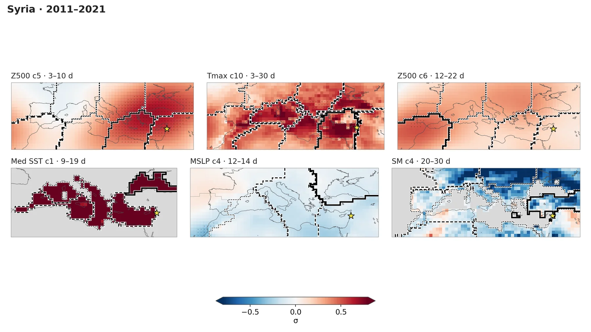
About this figure
Same panels, outlines and ±0.8σ scale as the Syria training maps, with R computed over the test summers 2011–2021 (never used by the CRO); dots come from a permutation of the test years. R is the raw anomaly vs 1980–2010, so it also contains the warmer test period (which is why the test check uses R − all days) and SST and Tmax panels can saturate. Panels with at least 20% of their area beyond ±0.8σ: Med SST c1 (98%).
anomalia/figuras/sitios/Siria_test.png
Egypt: anomaly maps at the CRO-selected clusters (test 2011–2021)
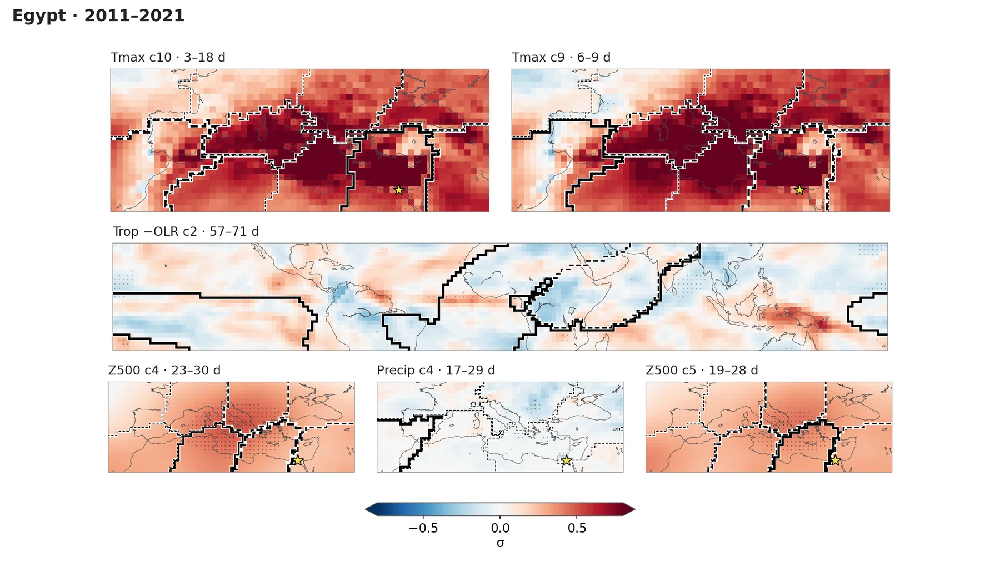
About this figure
Same panels, outlines and ±0.8σ scale as the Egypt training maps, with R computed over the test summers 2011–2021 (never used by the CRO); dots come from a permutation of the test years. R is the raw anomaly vs 1980–2010, so it also contains the warmer test period (which is why the test check uses R − all days) and SST and Tmax panels can saturate. No panel has 20% or more of its area beyond ±0.8σ.
anomalia/figuras/sitios/Egipto_test.png
Libya: anomaly maps at the CRO-selected clusters (test 2011–2021)
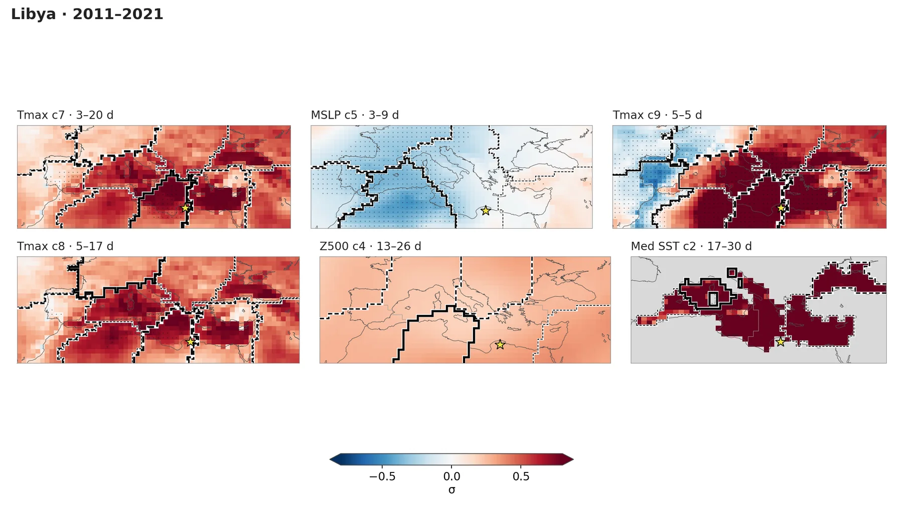
About this figure
Same panels, outlines and ±0.8σ scale as the Libya training maps, with R computed over the test summers 2011–2021 (never used by the CRO); dots come from a permutation of the test years. R is the raw anomaly vs 1980–2010, so it also contains the warmer test period (which is why the test check uses R − all days) and SST and Tmax panels can saturate. Panels with at least 20% of their area beyond ±0.8σ: Med SST c2 (89%) and Tmax c9 (27%).
anomalia/figuras/sitios/Libia_test.png
Tunisia: anomaly maps at the CRO-selected clusters (test 2011–2021)
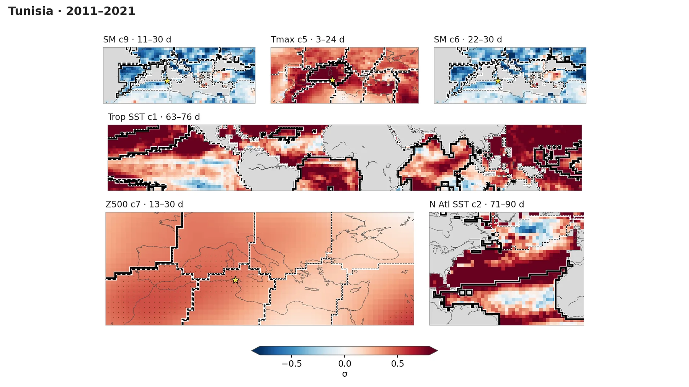
About this figure
Same panels, outlines and ±0.8σ scale as the Tunisia training maps, with R computed over the test summers 2011–2021 (never used by the CRO); dots come from a permutation of the test years. R is the raw anomaly vs 1980–2010, so it also contains the warmer test period (which is why the test check uses R − all days) and SST and Tmax panels can saturate. Panels with at least 20% of their area beyond ±0.8σ: N Atl SST c2 (36%) and Trop SST c1 (32%).
anomalia/figuras/sitios/Tunez_test.png
Algeria: anomaly maps at the CRO-selected clusters (test 2011–2021)
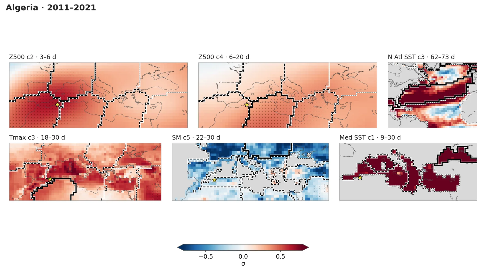
About this figure
Same panels, outlines and ±0.8σ scale as the Algeria training maps, with R computed over the test summers 2011–2021 (never used by the CRO); dots come from a permutation of the test years. R is the raw anomaly vs 1980–2010, so it also contains the warmer test period (which is why the test check uses R − all days) and SST and Tmax panels can saturate. Panels with at least 20% of their area beyond ±0.8σ: Med SST c1 (93%) and N Atl SST c3 (34%).
anomalia/figuras/sitios/Argelia_test.png
Per-site lag profiles
Murcia: anomaly lag profiles inside the selected clusters (train and test)
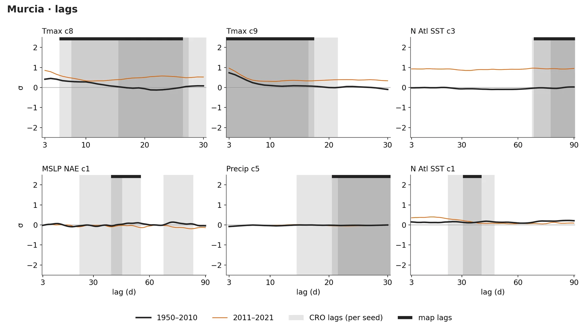
About this figure
Mean R (σ) of each panel's cluster at every lag (3–30 d local, 3–90 d remote): training 1950–2010 thick black, test 2011–2021 thin orange; grey shading = each seed's CRO lag window (darker where seeds overlap); black bar = lag window used in the maps; y-axis ±2.5σ, common to all sites. Training R is largest for Tmax c9 at lag 3 (0.73σ); the three remote profiles (N Atl SST c3 and c1, MSLP NAE c1) stay within ±0.25σ in training.
anomalia/figuras/sitios/Murcia_lags.png
Monaco: anomaly lag profiles inside the selected clusters (train and test)
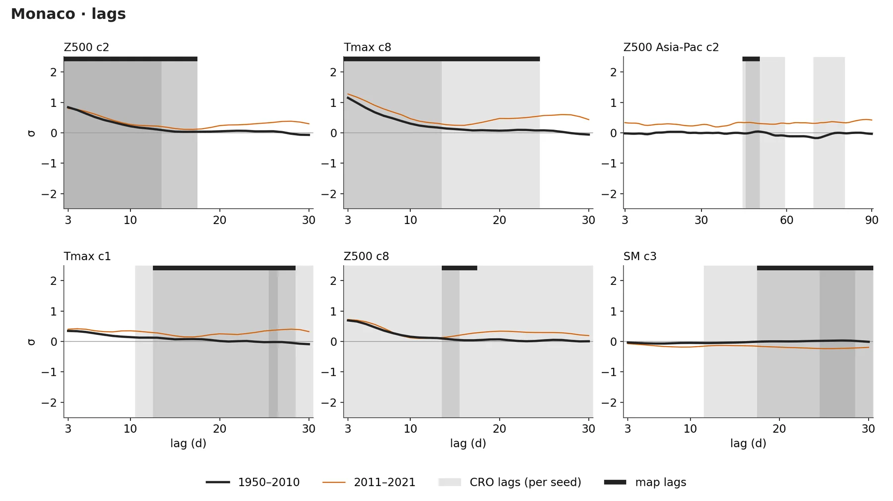
About this figure
Mean R (σ) of each panel's cluster at every lag (3–30 d local, 3–90 d remote): training 1950–2010 thick black, test 2011–2021 thin orange; grey shading = each seed's CRO lag window (darker where seeds overlap); black bar = lag window used in the maps; y-axis ±2.5σ, common to all sites. Training R is largest at lag 3 for Tmax c8 (1.15σ) and Z500 c2 (0.84σ) and falls towards zero at longer lags.
anomalia/figuras/sitios/Monaco_lags.png
Sardinia: anomaly lag profiles inside the selected clusters (train and test)
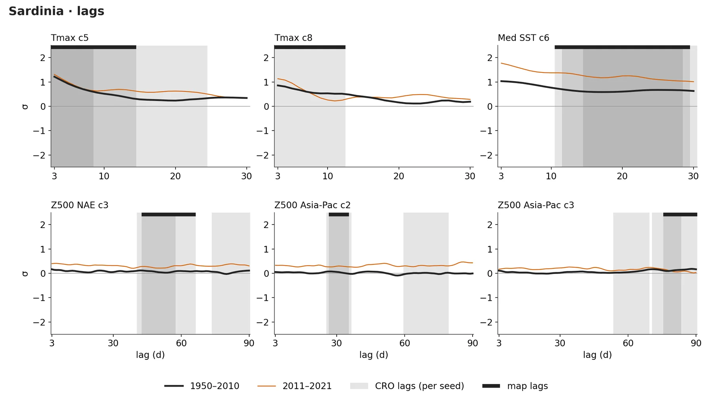
About this figure
Mean R (σ) of each panel's cluster at every lag (3–30 d local, 3–90 d remote): training 1950–2010 thick black, test 2011–2021 thin orange; grey shading = each seed's CRO lag window (darker where seeds overlap); black bar = lag window used in the maps; y-axis ±2.5σ, common to all sites. Training R is largest at lag 3 for Tmax c5 (1.21σ); Med SST c6 is 1.03σ in training and 1.77σ in test at lag 3.
anomalia/figuras/sitios/Cerdenia_lags.png
Croatia: anomaly lag profiles inside the selected clusters (train and test)
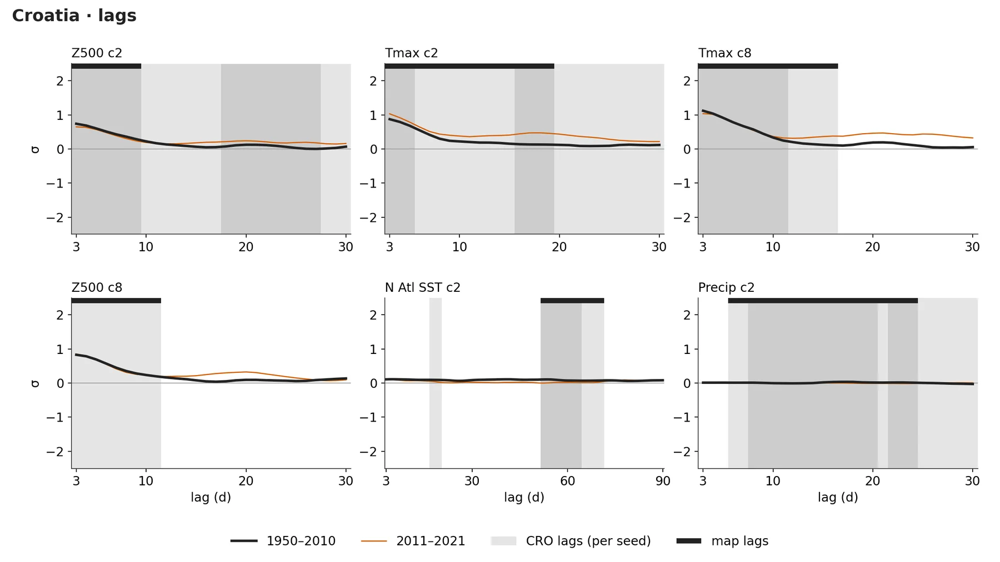
About this figure
Mean R (σ) of each panel's cluster at every lag (3–30 d local, 3–90 d remote): training 1950–2010 thick black, test 2011–2021 thin orange; grey shading = each seed's CRO lag window (darker where seeds overlap); black bar = lag window used in the maps; y-axis ±2.5σ, common to all sites. Training R at lag 3 is 1.12σ for Tmax c8, 0.87σ for Tmax c2, 0.83σ for Z500 c8 and 0.74σ for Z500 c2.
anomalia/figuras/sitios/Croacia_lags.png
Albania: anomaly lag profiles inside the selected clusters (train and test)
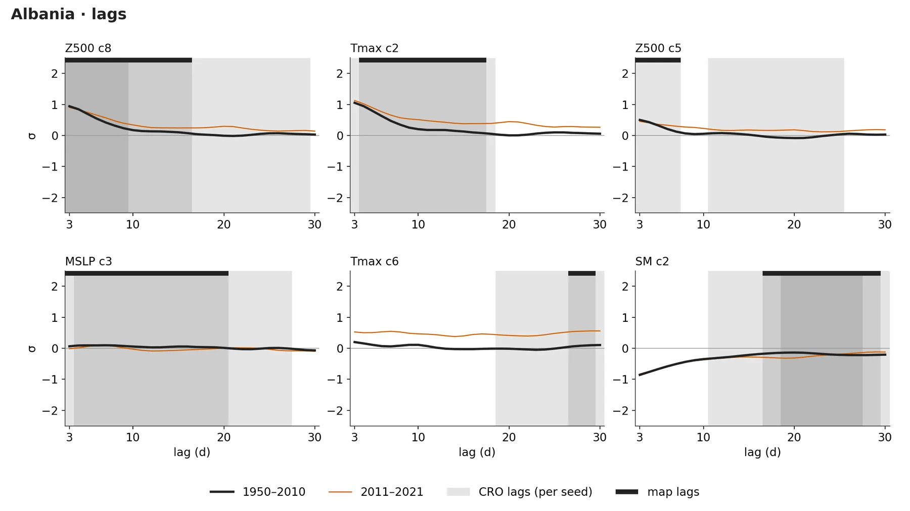
About this figure
Mean R (σ) of each panel's cluster at every lag (3–30 d local, 3–90 d remote): training 1950–2010 thick black, test 2011–2021 thin orange; grey shading = each seed's CRO lag window (darker where seeds overlap); black bar = lag window used in the maps; y-axis ±2.5σ, common to all sites. Training R at lag 3 is 1.05σ for Tmax c2, 0.94σ for Z500 c8 and −0.86σ for soil moisture SM c2.
anomalia/figuras/sitios/Albania_lags.png
Greece: anomaly lag profiles inside the selected clusters (train and test)
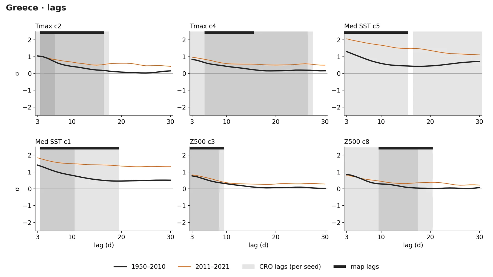
About this figure
Mean R (σ) of each panel's cluster at every lag (3–30 d local, 3–90 d remote): training 1950–2010 thick black, test 2011–2021 thin orange; grey shading = each seed's CRO lag window (darker where seeds overlap); black bar = lag window used in the maps; y-axis ±2.5σ, common to all sites. At lag 3, training R is 1.41σ (Med SST c1), 1.30σ (Med SST c5) and 1.04σ (Tmax c2); the test curves of the two Med SST clusters lie higher (1.84σ and 2.06σ).
anomalia/figuras/sitios/Grecia_lags.png
Turkey: anomaly lag profiles inside the selected clusters (train and test)
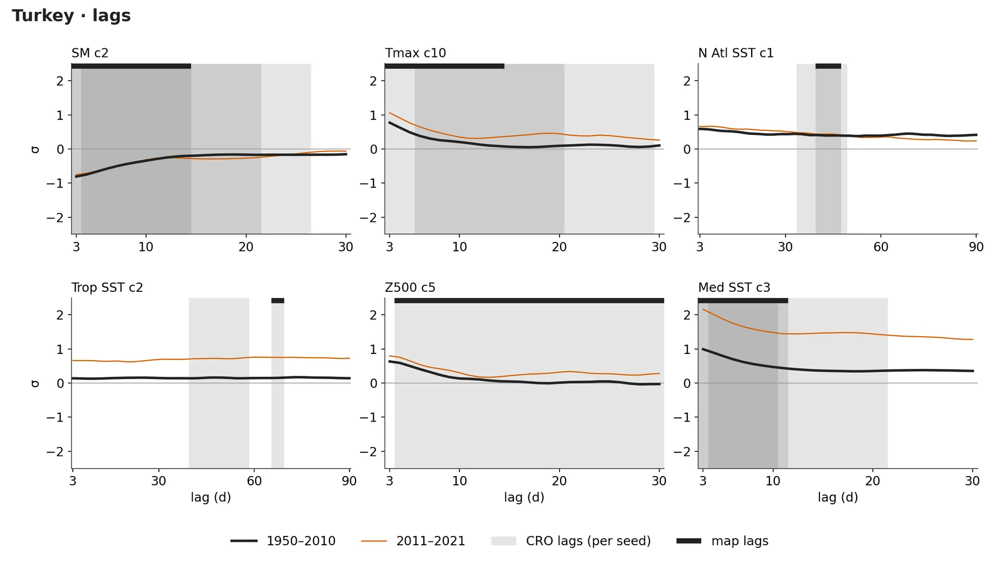
About this figure
Mean R (σ) of each panel's cluster at every lag (3–30 d local, 3–90 d remote): training 1950–2010 thick black, test 2011–2021 thin orange; grey shading = each seed's CRO lag window (darker where seeds overlap); black bar = lag window used in the maps; y-axis ±2.5σ, common to all sites. At lag 3, training R is −0.81σ for SM c2 and 0.77σ for Tmax c10; Med SST c3 is 0.99σ in training and 2.16σ in test.
anomalia/figuras/sitios/Turquia_lags.png
Syria: anomaly lag profiles inside the selected clusters (train and test)
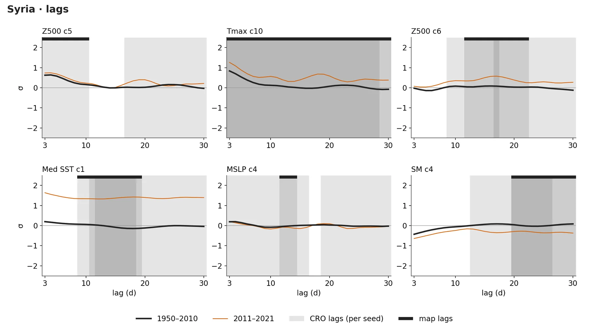
About this figure
Mean R (σ) of each panel's cluster at every lag (3–30 d local, 3–90 d remote): training 1950–2010 thick black, test 2011–2021 thin orange; grey shading = each seed's CRO lag window (darker where seeds overlap); black bar = lag window used in the maps; y-axis ±2.5σ, common to all sites. At lag 3, training R is 0.84σ for Tmax c10 and 0.62σ for Z500 c5; Med SST c1 is 0.20σ in training but 1.64σ in test.
anomalia/figuras/sitios/Siria_lags.png
Egypt: anomaly lag profiles inside the selected clusters (train and test)
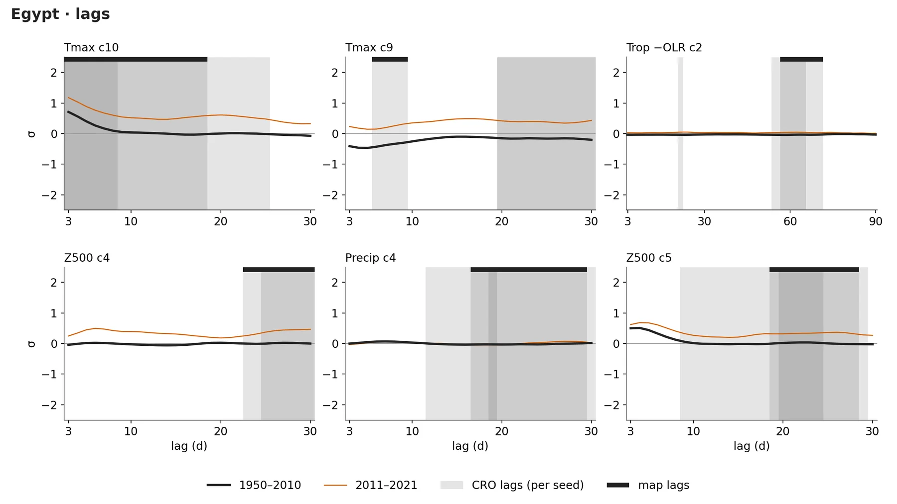
About this figure
Mean R (σ) of each panel's cluster at every lag (3–30 d local, 3–90 d remote): training 1950–2010 thick black, test 2011–2021 thin orange; grey shading = each seed's CRO lag window (darker where seeds overlap); black bar = lag window used in the maps; y-axis ±2.5σ, common to all sites. Training R is 0.71σ for Tmax c10 at lag 3, while the Trop −OLR c2 profile stays near zero (|R| ≤ 0.05σ in training).
anomalia/figuras/sitios/Egipto_lags.png
Libya: anomaly lag profiles inside the selected clusters (train and test)
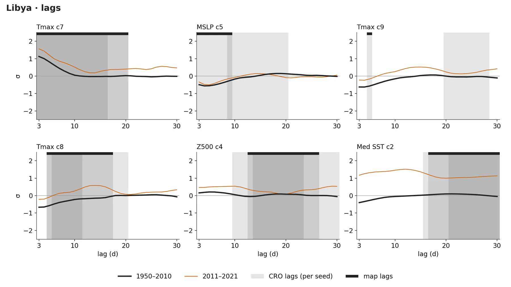
About this figure
Mean R (σ) of each panel's cluster at every lag (3–30 d local, 3–90 d remote): training 1950–2010 thick black, test 2011–2021 thin orange; grey shading = each seed's CRO lag window (darker where seeds overlap); black bar = lag window used in the maps; y-axis ±2.5σ, common to all sites. Training R is 1.12σ for Tmax c7 at lag 3 and negative for Tmax c8 (−0.67σ at lag 3), Tmax c9 (−0.63σ at lag 4) and MSLP c5 (−0.56σ at lag 4).
anomalia/figuras/sitios/Libia_lags.png
Tunisia: anomaly lag profiles inside the selected clusters (train and test)
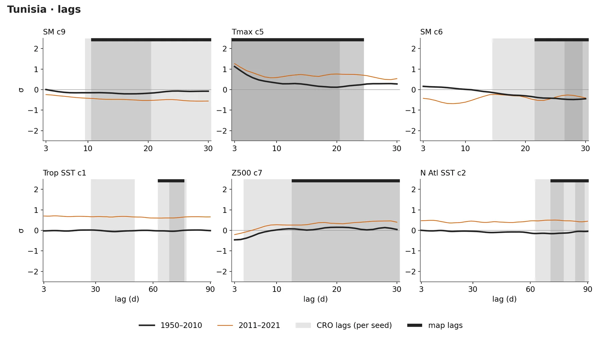
About this figure
Mean R (σ) of each panel's cluster at every lag (3–30 d local, 3–90 d remote): training 1950–2010 thick black, test 2011–2021 thin orange; grey shading = each seed's CRO lag window (darker where seeds overlap); black bar = lag window used in the maps; y-axis ±2.5σ, common to all sites. Training R is 1.12σ for Tmax c5 at lag 3; Z500 c7 is −0.46σ at lag 3 and SM c6 reaches −0.49σ at lag 28.
anomalia/figuras/sitios/Tunez_lags.png
Algeria: anomaly lag profiles inside the selected clusters (train and test)
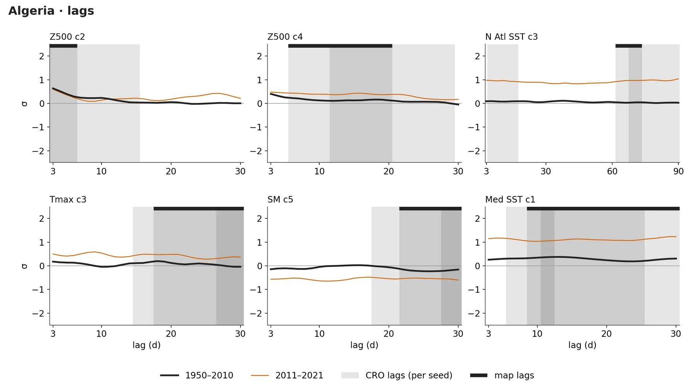
About this figure
Mean R (σ) of each panel's cluster at every lag (3–30 d local, 3–90 d remote): training 1950–2010 thick black, test 2011–2021 thin orange; grey shading = each seed's CRO lag window (darker where seeds overlap); black bar = lag window used in the maps; y-axis ±2.5σ, common to all sites. Training R at lag 3 is 0.63σ for Z500 c2 and 0.40σ for Z500 c4.
anomalia/figuras/sitios/Argelia_lags.png
Alternative versions
Tmax: pre-heatwave anomaly atlas, earlier encoding (train 1950–2010)
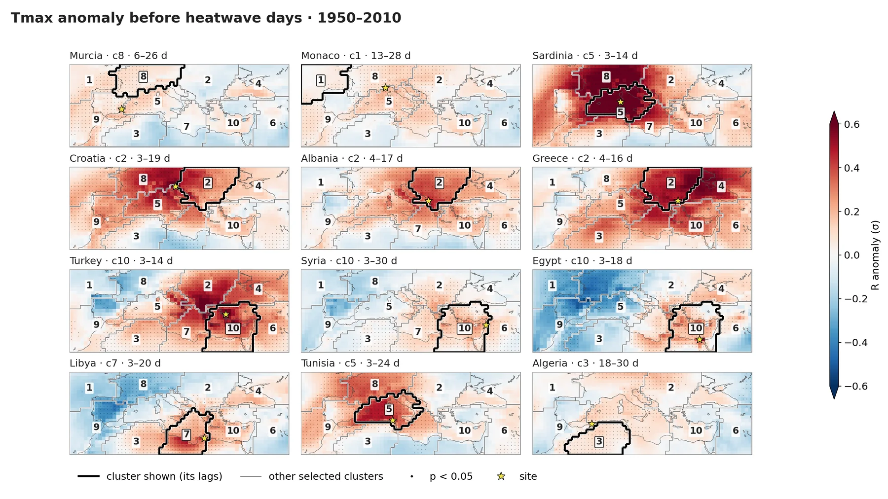
About this figure
Earlier version of the Tmax atlas with the same anomaly R (σ, vs 1980–2010, heatwave days 1950–2010), panel clusters and lag windows: thick black outline = panel cluster, thin grey outline = every other cluster selected at the site by at least one seed, dots = p < 0.05, star = site; scale ±0.6 σ. Replaced by the Tmax atlas under 'Atlases by field', which outlines and numbers only the other clusters selected by ≥ 2 of 3 seeds and draws the chosen cluster with a white halo.
presentacion/figuras/05b_atlas_L_t2m_max.png
Z500: pre-heatwave anomaly atlas, earlier encoding (train 1950–2010)
About this figure
Earlier version of the Z500 atlas with the same anomaly R (σ, vs 1980–2010, heatwave days 1950–2010), panel clusters and lag windows: thick black outline = panel cluster, thin grey outline = every other cluster selected at the site by at least one seed, dots = p < 0.05, star = site; scale ±0.6 σ. Replaced by the Z500 atlas under 'Atlases by field', which outlines only clusters selected by ≥ 2 of 3 seeds.
presentacion/figuras/05b_atlas_L_z500.png
MSLP: pre-heatwave anomaly atlas, earlier encoding (train 1950–2010)
About this figure
Earlier version of the MSLP atlas with the same anomaly R (σ, vs 1980–2010, heatwave days 1950–2010), panel clusters and lag windows: thick black outline = panel cluster, thin grey outline = every other cluster selected at the site by at least one seed, dots = p < 0.05, star = site; scale ±0.6 σ. Replaced by the MSLP atlas under 'Atlases by field', which outlines only clusters selected by ≥ 2 of 3 seeds.
presentacion/figuras/05b_atlas_L_msl.png
Soil moisture: pre-heatwave anomaly atlas, earlier encoding (train 1950–2010)
About this figure
Earlier version of the soil-moisture atlas with the same anomaly R (σ, vs 1980–2010, heatwave days 1950–2010), panel clusters and lag windows: thick black outline = panel cluster, thin grey outline = every other cluster selected at the site by at least one seed, dots = p < 0.05, star = site, grey = sea; scale ±0.6 σ. Replaced by the soil-moisture atlas under 'Atlases by field', which outlines only clusters selected by ≥ 2 of 3 seeds.
presentacion/figuras/05b_atlas_L_sm1.png
Precipitation: pre-heatwave anomaly atlas, earlier encoding (train 1950–2010)
About this figure
Earlier version of the precipitation atlas with the same anomaly R (σ, vs 1980–2010, heatwave days 1950–2010), panel clusters and lag windows: thick black outline = panel cluster, thin grey outline = every other cluster selected at the site by at least one seed, dots = p < 0.05, star = site; scale ±0.6 σ. Replaced by the precipitation atlas under 'Atlases by field', which outlines only clusters selected by ≥ 2 of 3 seeds.
presentacion/figuras/05b_atlas_L_tp.png
Med SST: pre-heatwave anomaly atlas, earlier encoding (train 1950–2010)
About this figure
Earlier version of the Mediterranean SST atlas with the same anomaly R (σ, vs 1980–2010, heatwave days 1950–2010), panel clusters and lag windows: thick black outline = panel cluster, thin grey outline = every other cluster selected at the site by at least one seed, dots = p < 0.05, star = site, grey = land; scale ±0.6 σ. Replaced by the Med SST atlas under 'Atlases by field', which outlines only clusters selected by ≥ 2 of 3 seeds.
presentacion/figuras/05b_atlas_L_sstMed.png
Tmax (local) atlas: anomaly by site, all selected clusters (1950–2010)
About this figure
One panel per site: training (1950–2010) R (σ, scale ±0.6σ) averaged over the representative lag window of the site's most-selected Tmax cluster (boxed number, solid outline); the other clusters of the field chosen by any seed at that site have numbered dashed outlines (thicker = more seeds) but are shown at the panel's lags, not their own. Dots = nodes where heatwave days differ from all days (p < 0.05), not where R differs from zero; star = site where it lies inside the map; all 12 sites selected the field (at least one seed). Alternative version: the talk uses the clear-encoding atlas of the same field (same values), which outlines only the chosen cluster and, for local fields, the other clusters chosen by at least 2 seeds.
anomalia/figuras/atlas/L_t2m_max.png
Z500 (local) atlas: anomaly by site, all selected clusters (1950–2010)
About this figure
One panel per site: training (1950–2010) R (σ, scale ±0.6σ) averaged over the representative lag window of the site's most-selected Z500 cluster (boxed number, solid outline); the other clusters of the field chosen by any seed at that site have numbered dashed outlines (thicker = more seeds) but are shown at the panel's lags, not their own. Dots = nodes where heatwave days differ from all days (p < 0.05), not where R differs from zero; star = site where it lies inside the map; all 12 sites selected the field (at least one seed). Alternative version: the talk uses the clear-encoding atlas of the same field (same values), which outlines only the chosen cluster and, for local fields, the other clusters chosen by at least 2 seeds.
anomalia/figuras/atlas/L_z500.png
MSLP (local) atlas: anomaly by site, all selected clusters (1950–2010)
About this figure
One panel per site: training (1950–2010) R (σ, scale ±0.6σ) averaged over the representative lag window of the site's most-selected MSLP cluster (boxed number, solid outline); the other clusters of the field chosen by any seed at that site have numbered dashed outlines (thicker = more seeds) but are shown at the panel's lags, not their own. Dots = nodes where heatwave days differ from all days (p < 0.05), not where R differs from zero; star = site where it lies inside the map; all 12 sites selected the field (at least one seed). Alternative version: the talk uses the clear-encoding atlas of the same field (same values), which outlines only the chosen cluster and, for local fields, the other clusters chosen by at least 2 seeds.
anomalia/figuras/atlas/L_msl.png
Soil moisture (local) atlas: anomaly by site, all selected clusters (1950–2010)
About this figure
One panel per site: training (1950–2010) R (σ, scale ±0.6σ) averaged over the representative lag window of the site's most-selected soil moisture cluster (boxed number, solid outline); the other clusters of the field chosen by any seed at that site have numbered dashed outlines (thicker = more seeds) but are shown at the panel's lags, not their own. Dots = nodes where heatwave days differ from all days (p < 0.05), not where R differs from zero; star = site where it lies inside the map; all 12 sites selected the field (at least one seed); grey = sea (no data). Alternative version: the talk uses the clear-encoding atlas of the same field (same values), which outlines only the chosen cluster and, for local fields, the other clusters chosen by at least 2 seeds.
anomalia/figuras/atlas/L_sm1.png
Precipitation (local) atlas: anomaly by site, all selected clusters (1950–2010)
About this figure
One panel per site: training (1950–2010) R (σ, scale ±0.6σ) averaged over the representative lag window of the site's most-selected precipitation cluster (boxed number, solid outline); the other clusters of the field chosen by any seed at that site have numbered dashed outlines (thicker = more seeds) but are shown at the panel's lags, not their own. Dots = nodes where heatwave days differ from all days (p < 0.05), not where R differs from zero; star = site where it lies inside the map; all 12 sites selected the field (at least one seed). Alternative version: the talk uses the clear-encoding atlas of the same field (same values), which outlines only the chosen cluster and, for local fields, the other clusters chosen by at least 2 seeds.
anomalia/figuras/atlas/L_tp.png
Med SST (local) atlas: anomaly by site, all selected clusters (1950–2010)
About this figure
One panel per site: training (1950–2010) R (σ, scale ±0.6σ) averaged over the representative lag window of the site's most-selected Med SST cluster (boxed number, solid outline); the other clusters of the field chosen by any seed at that site have numbered dashed outlines (thicker = more seeds) but are shown at the panel's lags, not their own. Dots = nodes where heatwave days differ from all days (p < 0.05), not where R differs from zero; star = site where it lies inside the map; grey = land (no data); Sardinia (37%) and Turkey (38%) have at least 20% of their area beyond the scale. Alternative version: the talk uses the clear-encoding atlas of the same field (same values), which outlines only the chosen cluster and, for local fields, the other clusters chosen by at least 2 seeds.
anomalia/figuras/atlas/L_sstMed.png
Z500 NAE (remote) atlas: anomaly by site, all selected clusters (1950–2010)
About this figure
One panel per site: training (1950–2010) R (σ, scale ±0.4σ) averaged over the representative lag window of the site's most-selected Z500 NAE cluster (boxed number, solid outline); the other clusters of the field chosen by any seed at that site have numbered dashed outlines (thicker = more seeds) but are shown at the panel's lags, not their own. Dots = nodes where heatwave days differ from all days (p < 0.05), not where R differs from zero; star = site where it lies inside the map; all 12 sites selected the field (at least one seed). Alternative version: the talk uses the clear-encoding atlas of the same field (same values), which outlines only the chosen cluster and, for local fields, the other clusters chosen by at least 2 seeds.
anomalia/figuras/atlas/R_z500.png
MSLP NAE (remote) atlas: anomaly by site, all selected clusters (1950–2010)
About this figure
One panel per site: training (1950–2010) R (σ, scale ±0.4σ) averaged over the representative lag window of the site's most-selected MSLP NAE cluster (boxed number, solid outline); the other clusters of the field chosen by any seed at that site have numbered dashed outlines (thicker = more seeds) but are shown at the panel's lags, not their own. Dots = nodes where heatwave days differ from all days (p < 0.05), not where R differs from zero; star = site where it lies inside the map; all 12 sites selected the field (at least one seed). Alternative version: the talk uses the clear-encoding atlas of the same field (same values), which outlines only the chosen cluster and, for local fields, the other clusters chosen by at least 2 seeds.
anomalia/figuras/atlas/R_msl.png
N Atl SST (remote) atlas: anomaly by site, all selected clusters (1950–2010)
About this figure
One panel per site: training (1950–2010) R (σ, scale ±0.4σ) averaged over the representative lag window of the site's most-selected N Atl SST cluster (boxed number, solid outline); the other clusters of the field chosen by any seed at that site have numbered dashed outlines (thicker = more seeds) but are shown at the panel's lags, not their own. Dots = nodes where heatwave days differ from all days (p < 0.05), not where R differs from zero; star = site where it lies inside the map; grey = land (no data); Syria never selected this field ('not selected'); the Greece panel has 23% of its area beyond the scale. Alternative version: the talk uses the clear-encoding atlas of the same field (same values), which outlines only the chosen cluster and, for local fields, the other clusters chosen by at least 2 seeds.
anomalia/figuras/atlas/A_sst.png
Trop SST (remote) atlas: anomaly by site, all selected clusters (1950–2010)
About this figure
One panel per site: training (1950–2010) R (σ, scale ±0.4σ) averaged over the representative lag window of the site's most-selected Trop SST cluster (boxed number, solid outline); the other clusters of the field chosen by any seed at that site have numbered dashed outlines (thicker = more seeds) but are shown at the panel's lags, not their own. Dots = nodes where heatwave days differ from all days (p < 0.05), not where R differs from zero; star = site where it lies inside the map; grey = land (no data); the Egypt panel has 36% of its area beyond the scale. Alternative version: the talk uses the clear-encoding atlas of the same field (same values), which outlines only the chosen cluster and, for local fields, the other clusters chosen by at least 2 seeds.
anomalia/figuras/atlas/T_sst.png
Trop −OLR (remote) atlas: anomaly by site, all selected clusters (1950–2010)
About this figure
One panel per site: training (1950–2010) R (σ, scale ±0.4σ) averaged over the representative lag window of the site's most-selected Trop −OLR cluster (boxed number, solid outline); the other clusters of the field chosen by any seed at that site have numbered dashed outlines (thicker = more seeds) but are shown at the panel's lags, not their own. Dots = nodes where heatwave days differ from all days (p < 0.05), not where R differs from zero; star = site where it lies inside the map; −OLR is the net top-of-atmosphere longwave flux, so positive values mean less outgoing longwave (more convection). Alternative version: the talk uses the clear-encoding atlas of the same field (same values), which outlines only the chosen cluster and, for local fields, the other clusters chosen by at least 2 seeds.
anomalia/figuras/atlas/T_olr.png
Trop Z500 (remote) atlas: anomaly by site, all selected clusters (1950–2010)
About this figure
One panel per site: training (1950–2010) R (σ, scale ±0.4σ) averaged over the representative lag window of the site's most-selected Trop Z500 cluster (boxed number, solid outline); the other clusters of the field chosen by any seed at that site have numbered dashed outlines (thicker = more seeds) but are shown at the panel's lags, not their own. Dots = nodes where heatwave days differ from all days (p < 0.05), not where R differs from zero; star = site where it lies inside the map; Syria (39%), Egypt (61%) and Libya (32%) have at least 20% of their area beyond the scale, but the all-days mean of training tropical Z500 is itself negative (median −0.32σ over the consistent tropical Z500 pairs), so blue here does not by itself indicate a heatwave signal. Alternative version: the talk uses the clear-encoding atlas of the same field (same values), which outlines only the chosen cluster and, for local fields, the other clusters chosen by at least 2 seeds.
anomalia/figuras/atlas/T_z500.png
Z500 Asia-Pac (remote) atlas: anomaly by site, all selected clusters (1950–2010)
About this figure
One panel per site: training (1950–2010) R (σ, scale ±0.4σ) averaged over the representative lag window of the site's most-selected Z500 Asia-Pac cluster (boxed number, solid outline); the other clusters of the field chosen by any seed at that site have numbered dashed outlines (thicker = more seeds) but are shown at the panel's lags, not their own. Dots = nodes where heatwave days differ from all days (p < 0.05), not where R differs from zero; star = site where it lies inside the map; Libya never selected this field ('not selected'). Alternative version: the talk uses the clear-encoding atlas of the same field (same values), which outlines only the chosen cluster and, for local fields, the other clusters chosen by at least 2 seeds.
anomalia/figuras/atlas/H_z500.png